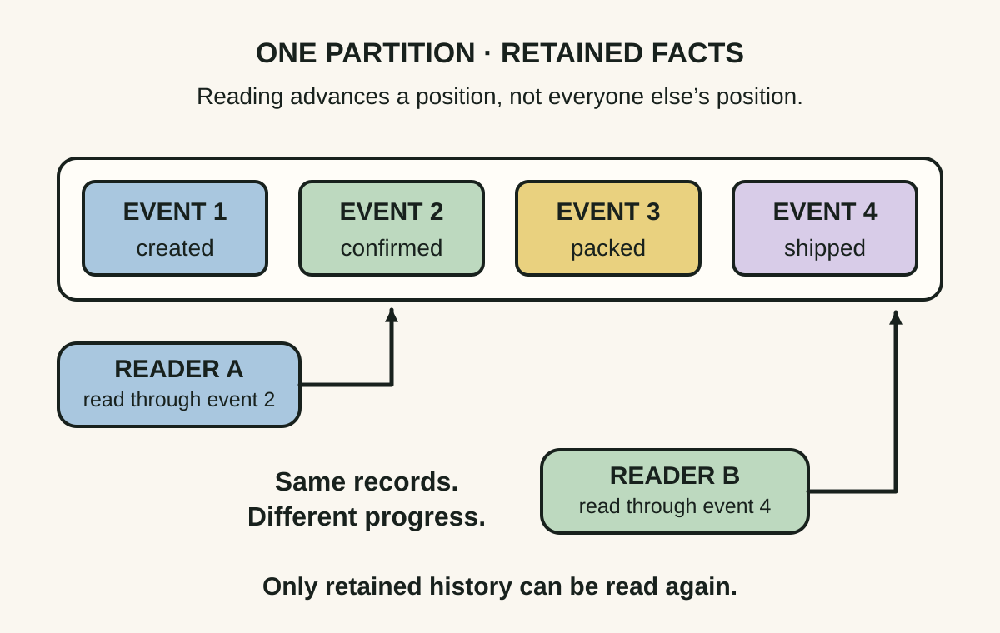
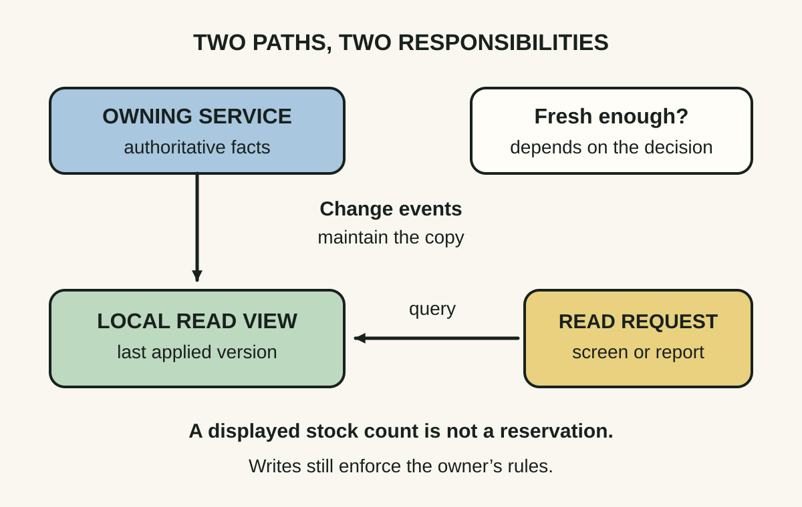
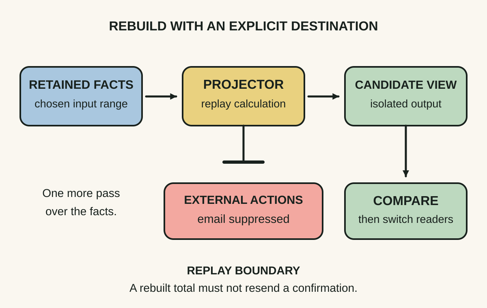

Daily lesson ·
Designing Event-Driven Systems
Use events as retained facts that different services can read, turn those facts into purpose-built local views, and design replay so rebuilding data does not repeat real-world actions.
Idea 1
Keep facts beyond their first reader #
The idea
Stopford treats the retained event log as part of the data architecture. An event can remain available after one consumer reads it, allowing another consumer to catch up or start later without asking the producer to recreate the past.
Separate the retained records from each consumer’s position. That separation makes independent reading possible; it does not require every reader to progress together. Kafka orders records within a partition, so a multi-partition topic is not one universal business timeline.

Why it matters
A new reporting view can be built from existing facts instead of a bespoke export from each producer. A delayed consumer can catch up if the history it needs has survived. These are concrete capabilities to weigh against storage and operational cost.
Apply it today
Choose one event your product emits. Write the named consumers, their maximum tolerable delay and whether a new consumer needs older records.
Write a retention and recovery requirement in plain language: which facts must remain available, for how long, and where a rebuild starts if they are gone.
Caveat or failure mode
A retained log is not automatically a complete audit archive. Time or size retention can delete records; compaction can remove older values for a key. Retention must also fit privacy and deletion requirements. Do not promise a historical reconstruction from a stream that preserves only enough data to restore current state.
Idea 2
Move the query to a local view #
The idea
Stopford distinguishes an event that merely announces a change from one that transfers enough state for another service to maintain a local view. With that view, the consumer can answer selected queries without calling the source service on every request.
This changes the dependency: the source still owns its facts, while the consumer owns a derived representation for its own questions. Confluent’s accompanying orders example makes this concrete with a queryable view built from events.

Why it matters
A service can shape an index or summary around its own workload, and keep serving suitable reads through a temporary source outage. The practical question becomes whether the view is fresh enough for this decision, not simply whether it is fast.
Apply it today
Pick a screen that repeatedly fetches the same reference data from another service. List the smallest set of fields its local view would need.
Name the owner, update event and acceptable staleness. Identify one decision that must still use an authoritative operation instead of the copied view.
Caveat or failure mode
A local availability display does not reserve stock or enforce a credit limit. Two readers can act on the same stale value. Keep such invariants behind an authoritative write or reservation protocol. A local view also adds catch-up, schema evolution, deletion and reconciliation work; occasional remote queries may be cheaper.
Idea 3
Replay data without repeating actions #
The idea
Stopford separates recording accepted state changes from recording incoming commands. Replaying state changes can rebuild a derived view; reprocessing commands can run decision logic again. Those are different recovery operations.
The log makes another pass possible, but the recovery design decides what that pass means. Rebuilding an order total and sending an order-confirmation email are not equivalent consequences of reading the same event.

Why it matters
A corrected projector or new read model can recover value from stored facts. Without a side-effect boundary, the same recovery can resend notifications or repeat a request to another system. A technically repeatable job can still have non-repeatable consequences.
Apply it today
Choose one consumer you might replay. Split its outputs into derived data and external actions, including emails, charges and downstream commands.
Write how a replay selects its input range, isolates its output and handles each external effect. If one effect has no safe rule, mark that as a recovery gap.
Caveat or failure mode
Exactly-once processing inside a transactional streaming boundary does not automatically cover an email provider or payment API. An idempotency key helps only if the destination honours it with suitable scope and retention. Changed code, old schemas and historical lookups can also change replay results; preserved accepted events should not silently become newly invented business decisions.
Knowledge check · 6 questions
Learning check
Answer all 6, then check your answers. Your first result stays in this browser, and each explanation appears after you check. A 3-question review can appear on the homepage from tomorrow.
6 questions not yet answered.
Today's experiment · 8 minutes
Rebuild a tiny view twice
- On paper, write three accepted events for order A: Created with total $40; TotalCorrected to $35; Cancelled. Keep this order fixed.
- Apply them to an empty current-state table with columns order, total and status. Separately list any external action a handler might attempt.
- Start with a second empty table and replay the same events. Compare the two final rows. Count how many confirmations a naive handler would attempt across both passes.
- Write one replay rule that keeps the rebuilt row while suppressing the second pass’s external actions. Add one missing fact that would prevent a reliable rebuild in a real system.
Observable result: Two matching rows show what the projection can reproduce. Your action count and replay rule expose whether doing the calculation twice would also do something to a customer twice.
Retrieval practice
Spaced recall
- From Release It!: how could a consumer’s remote lookup create a failure chain even when its input arrives asynchronously?
- From Continuous Delivery: what evidence would you require before switching readers from an old view to a rebuilt one?
- From The Scout Mindset: what observation would make you abandon the belief that an event log is needed for your current integration?
Verification
Source notes
These links support the attributed claims and edition details; applications and extensions are labelled in the lesson.
- Ben Stopford: free 2018 book and edition record; chapters 4, 5 and 7 ground the three ideas
- Ben Stopford: Designing Event-Driven Systems, full book; retained logs, state transfer and event versus command sourcing
- Ben Stopford: Build Services on a Backbone of Events; local views, ownership and coupling trade-offs
- Ben Stopford: Event Driven 2.0; retained history for new consumers, with vendor context
- Confluent: accompanying orders tutorial; derived read views and asynchronous workflow example, older APIs
- Apache Kafka current design documentation: consumer positions, compaction and exactly-once boundaries
- Martin Fowler: Event Sourcing; reconstruction, historical queries and external-system replay hazards
One-sentence takeaway